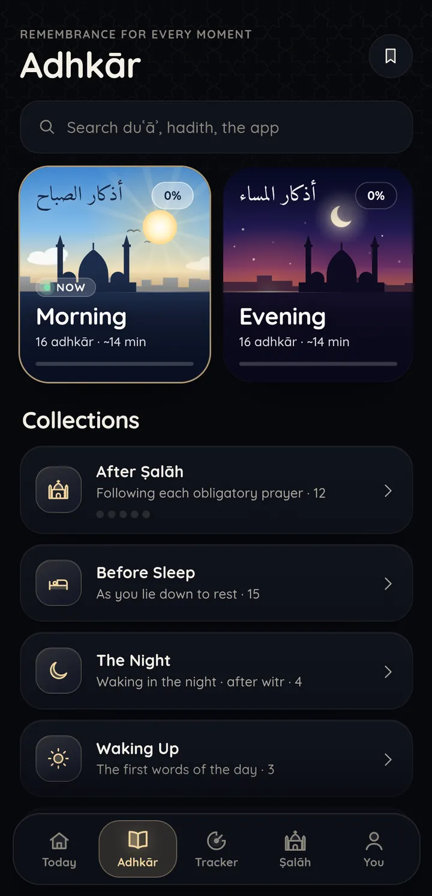
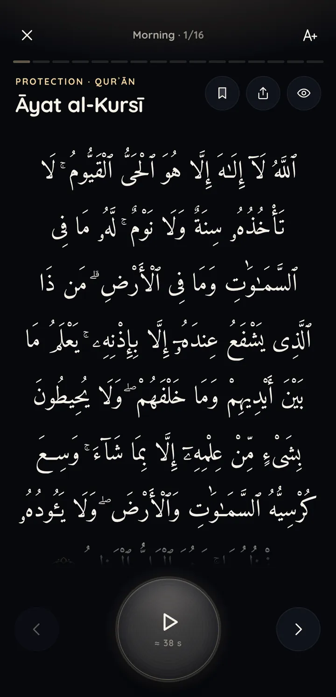
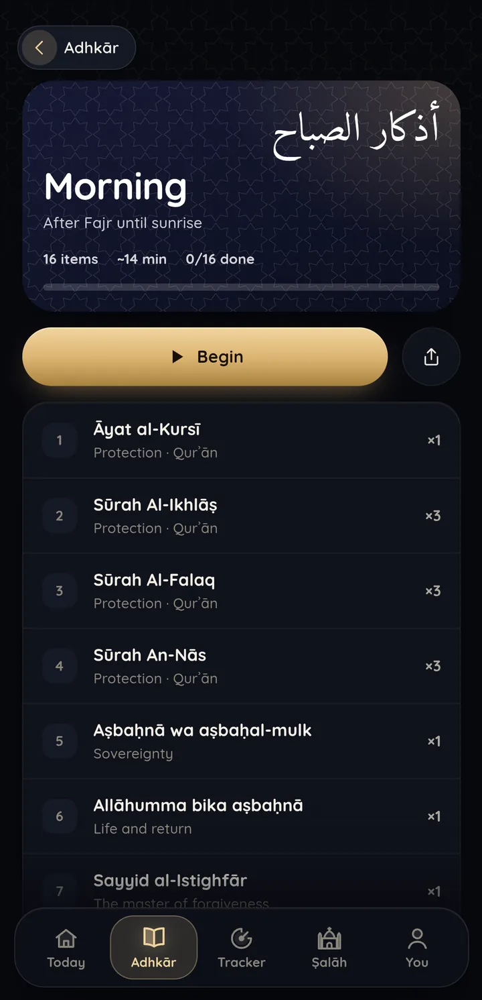
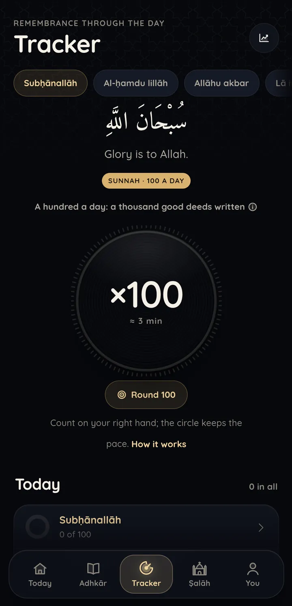
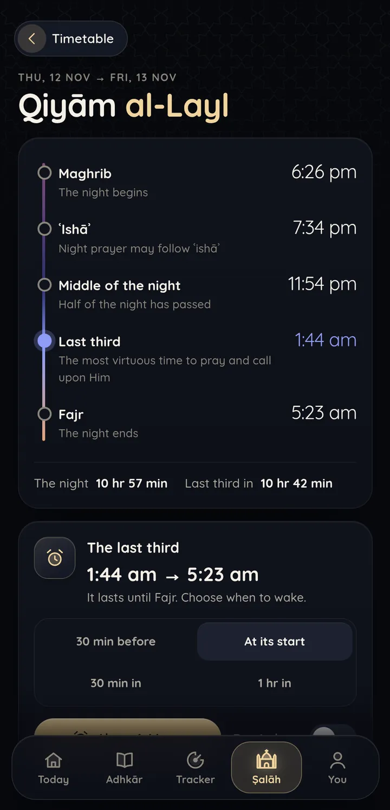
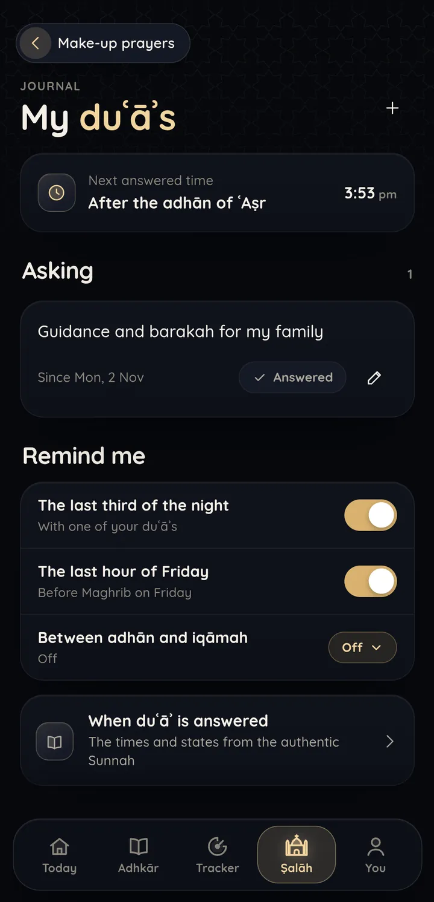
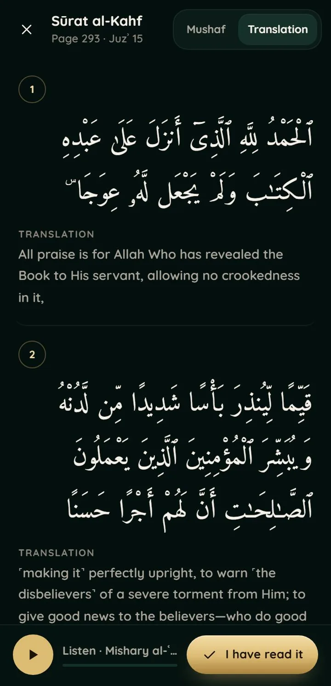
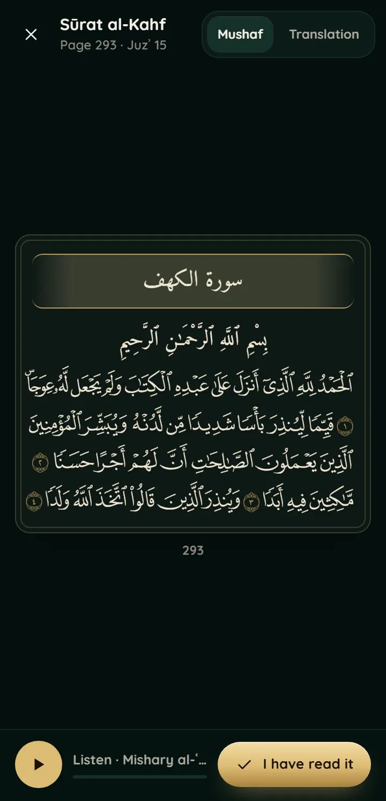

Every moment.
Remembrance,
through it all.
through it all.

Today
Your day, at a glance.
Count on your fingers.
As the Sunnah teaches. The app keeps the pace.







The qibla, and every prayer.
Anywhere. Even offline.
Anywhere. Even offline.


يوم الجمعة
Every Friday.
Sūrat al-Kahf, as printed in the Madinah Muṣḥaf.
Until ifṭār
2:25:14
Ramaḍān, all month.
Suhūr and ifṭār, tarāwīḥ, the khatm, the last ten nights.
On your computer, too.
The next prayer, always in view.
Adhkār
Free. Private. Offline.
Android
Windows
bashyr18.github.io/adhkar/guide
Built as ṣadaqah jāriyah